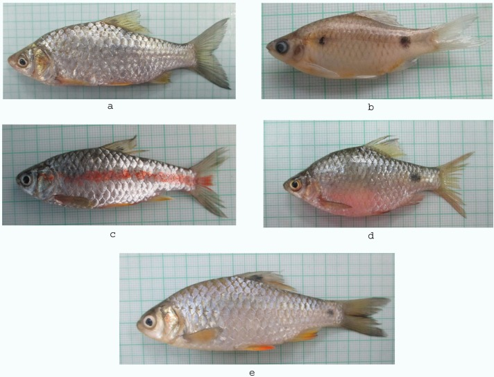
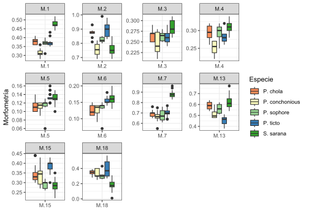
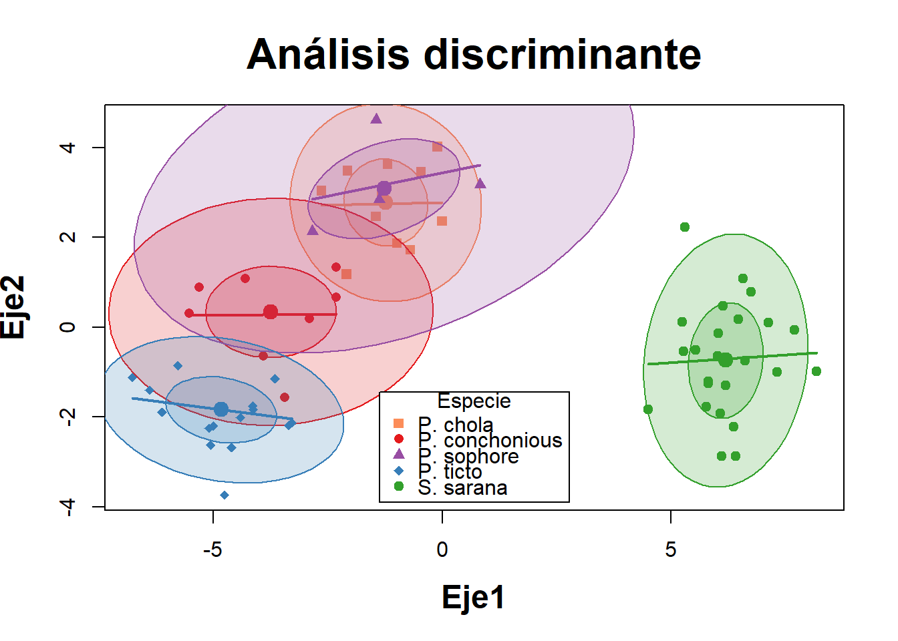
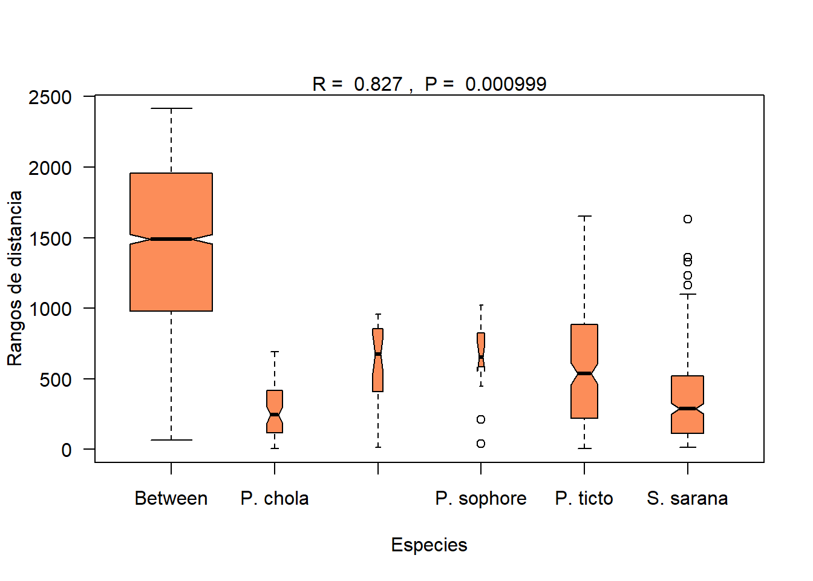

# Librerías requeridas
library(tidyverse)
library(vegan) # Para el permutes en homogeneidad de covarianzas
library(ade4)
library(car) # Para ejecutar el diagnóstico de independencia
library(MASS)Taller 11.1 Análisis de Varainza Multivariado No Paramétricos
Datos de morfométricos de peces de ríos de la India
Análisis de Varainza Multivariado No Paramétricos - base peces
Objetivo de la actividad:
La base de datos que se utilizará es la de medidas morfométricas de peces de un estudio realizado con peces de la india por Gupta et al. (2018) Articulo fuente en los que se validó la taxonomía de peces de la subfamilia Barbinae, utilizando 19 variables morfométricas y 19 variables meristicas, correspondientes a 5 Especie de la familia en mención.

El objetivo de este ejercicio consiste evaluar la variación morfométrica que se presenta en los peces de cada especie (grupos en comparación), para conocer si los atributos morfométricos generan diferencias en cada grupo evaluado, basado en pruebas de varianza no paramétricos. La base de datos que se utilizará es peces.csv.
Referencias bibliográficas de apoyo.
Libro: Análisis de datos ecológicos y ambientales - Rodríguez-Barrios Javier 2023 Ver el capítulo de MANOVA, en donde se detallan los procedimientos descritos en el presente ejercicio.
Perifiton de un río de Montaña - Osorio et al. 2014 Valoración del proceso sucesional de microalgas perifíticas el tramo medio del río Gaira - Santa Marta.
Invertebrados de un río de Montaña - Rodríguez-Barrios et al. 2011 Estudio de diferentes atributos comunitarios en invertebados acuáticos del río Gaira - Santa Marta.
Descomposición de Hojarásca en Ríos - Eyes et al. 2011 Trabajo realizado en el bosque de ribera del río Gaira - Santa Marta.
Nutrientes de la hojarásca - Fuentes y Rodríguez. 2011 Otro trabajo realizado en el bosque de ribera del río Gaira - Santa Marta.
Cargar las librerías requeridas
Cargar o importar la base de datos
La presente base de datos se encuentra en formato plano de csv, presenta una columna Especie que agrupa a las 5 Especie de peces, otra columna Grupo, que asigna un número a cada especie y posteriormente a las 19 variables morfométricas y 10 variables meristicas, de las cuales se selecionarán las 10 morfométricas para este ejercicio M.1 a M.7, M.13 a M.15 y M.18.
# Base de datos
peces<-read.csv2("peces.csv",row.names=1)
names(peces) [1] "Especie" "Grupo" "M.1" "M.2" "M.3" "M.4" "M.5"
[8] "M.6" "M.7" "M.8" "M.9" "M.10" "M.11" "M.12"
[15] "M.13" "M.14" "M.15" "M.16" "M.17" "M.18" "M.19"
[22] "M.20" "M.21" "M.22" "M.23" "M.24" "M.25" "M.26"
[29] "M.27" "M.28" "M.29"
Exploración de los datos
Figura de cajas por cada variable morfométrica
La Figura 1 permite visualizar la resolución de cada variable para diferenciar o discriminar a las diferentes especies de peces. Esta figura sirve de insumo para descartar aquellas variables con poco potencial de discriminación de las especies.
# Figuras multivariadas de Cajas y bigotes
library(reshape)
x11()
ggplot(melt(peces[,c(1,3:9,15,17,20)]), aes(x=variable, y=value)) +
geom_boxplot(aes(fill=Especie)) +
scale_fill_manual(values = c('#fc8d59','#ffffbf','#99d594','#377eb8','#33a02c')) +
labs(x="",y="Morfometría") +
facet_wrap(~ variable,scales="free") +
theme_bw()
Figura del lda para comparar a las especies de peces
A continuación, se realizará una figura del análisis discriminante - lda, que permitirá generar definir al nivel de discriminación de cada grupo o especie de pez. Se presentan algunas opciones gráficas con el procedimiento general y con el análisis discriminate canónico (dca)
# Cálculo del LDA
names(peces) [1] "Especie" "Grupo" "M.1" "M.2" "M.3" "M.4" "M.5"
[8] "M.6" "M.7" "M.8" "M.9" "M.10" "M.11" "M.12"
[15] "M.13" "M.14" "M.15" "M.16" "M.17" "M.18" "M.19"
[22] "M.20" "M.21" "M.22" "M.23" "M.24" "M.25" "M.26"
[29] "M.27" "M.28" "M.29" dis<-lda (Especie ~ M.1+M.2+M.3+M.4+M.5+M.6+M.7+M.13+M.15+M.18,
data = peces)A continuación se realizará el componente grafico del lda, el cual inicia con una figura que definirá unas elipses, las cuales relacionan a los individuos de cada especie y cuyo solapamiento definirá el nivel de relación entre estas.
# Escores o coordenadas de las observaciones en cada eje can?nico
Fp <- predict(dis)$x# Grupos asignados por el AD
group<-predict(dis,method="plug-in")$class# Coordenadas y grupos asignados
peces.coord=data.frame(Especie=group,Fp)La Figura 2 demuestra que si bien de presenta una buena discriminación de las especies de peces, 4 de las 5 evaluadas presentan cierta relación, definida por el solapamiento de sus elipses.
# Figura del LDA
attach(peces)
x11()
scatterplot(LD2~LD1 | Especie, data=peces.coord,reg.line=FALSE,
smooth=F, spread=F,span= 1,grid=F,
legend=list(coords="bottom"),
ellipse=T,font.lab=2, pch=c(15,16,17,18,19),
col=c('#fc8d59','#e41a1c','#984ea3','#377eb8','#33a02c'),
main="Análisis discriminante",
font.main=2,cex.main=2,cex.lab=1.5,
xlab="Eje1", ylab="Eje2")
Permanova 1. Análisis de similitudes multivariadas - ANOSIM
Paso 1. Distancia entre las observaciones
Se utilizará la distancia euclídea, debido a las relaciones lineales que existen entre las variables morfométricas.
# Distancia Euclídea con las 10 variables seleccionadas
peces.dist<-dist(peces[,c(3:9,15,17,20)],"euclid")
# round(peces.dist, 2)
Paso 2. Prueba de hipótesis multivariada con el ANOSIM
ANOSIM statistic = representa al estadístico de Clarc (R). Como R > 0 (= 0.82) indica que hay fuertes diferencias entre las especies de peces, basado en su morfometría.
Significance: 0.0009, indica que las diferencias entre los grupos son altamente significativas (significancia de la permutación).
Disimilarity ranks: Rangos de similitud entre y dentro de los grupos de Especies a diferentes percentiles (ver la siguiente figura que se muestra a continuación). De esta manera se reportan los resultados del estadístico MRPP: (R= 0.83, n= 70, p = 0.00099).
# ANOSIM
peces.anosim <- anosim(peces.dist, peces$Especie, permutations=1000)
summary(peces.anosim)
Call:
anosim(x = peces.dist, grouping = peces$Especie, permutations = 1000)
Dissimilarity: euclidean
ANOSIM statistic R: 0.8266
Significance: 0.000999
Permutation: free
Number of permutations: 1000
Upper quantiles of permutations (null model):
90% 95% 97.5% 99%
0.0441 0.0616 0.0808 0.0990
Dissimilarity ranks between and within classes:
0% 25% 50% 75% 100% N
Between 67 979.50 1489.50 1955.25 2414.5 1840
P. chola 5 119.25 244.25 415.00 691.5 66
P. conchonious 13 410.50 675.75 847.50 960.0 28
P. sophore 38 585.75 654.00 824.25 1022.0 15
P. ticto 5 219.50 536.25 885.50 1651.5 190
S. sarana 14 114.75 287.00 522.50 1631.0 276La figura es una gráfica de cajas y bigotes con muescas que visualiza la comparación de medianas generadas por las 1000 permutaciones, para comparar a las cinco especies de peces, entre y dentro de los grupos formados priori. De acuerdo con esta figura, todos los grupos son diferentes entre sí (sus cinturas o muescas no se solapan horizontalmente con la de la primera caja).
# Figura del Anosim
plot(peces.anosim,las=1, col= "#fc8d59", ylab= "Rangos de distancia",
xlab="Especies")
Permanova 2. Permutación multirespuesta - MRPP
Paso 1. Distancia entre las observaciones
Se utilizará la distancia euclídea calculada para el anterior ANOSIM.
# Distancia Euclídea con las 10 variables seleccionadas
peces.dist<-dist(peces[,c(3:9,15,17,20)],"euclid")
# round(peces.dist, 2)
Paso 2. Prueba de hipótesis multivariada con el MRPP
Class means and counts: Corresponde al estadístico delta del MRPP (δ), evaluados para cada grupo o especie de pez, que muestra un nivel bajo de correlación intragrupo (Pearson tipo III de 0.16).
Delta observado (0.16) < delta esperado por permutación (0.28), con lo que la diferenciación entre las cinco especies de peces es altamente significativo (p-valor: 0.0009). En este sentido se determina que las especies son diferentes en su morfología. De esta manera se reportan los resultados del estadístico MRPP: (MRPP= 0.16, n= 70, p = 0.00099).
# Prueba de hipótesis de diferencias en los grupos de Especies, mediante el MRPP
peces.mrpp <- mrpp(peces.dist, peces$Especie, permutations=1000)
peces.mrpp
Call:
mrpp(dat = peces.dist, grouping = peces$Especie, permutations = 1000)
Dissimilarity index: euclidean
Weights for groups: n
Class means and counts:
P. chola P. conchonious P. sophore P. ticto S. sarana
delta 0.1224 0.1809 0.1898 0.176 0.142
n 12 8 6 20 24
Chance corrected within-group agreement A: 0.4339
Based on observed delta 0.1569 and expected delta 0.2772
Significance of delta: 0.000999
Permutation: free
Number of permutations: 1000
Permanova 3. PERMANOVA de un factor (Especies de peces)
Este es el análisis más similar al MANOVA o análisis de varianza multivariado, pero la construcción de la tabla del MANOVA la hace mediante permutaciones, comparando a la matriz de distancias de los datos observados con otra matriz de distancia estimada por permutaciones.
Paso 1. Distancia entre las observaciones
Se utilizará la distancia euclídea calculada para el anterior ANOSIM y el MRPP, pero transformando las variables con logaritmo base 10, para mejorar su linealización de los datos.
# Distancia Euclídea con las 10 variables seleccionadas
peces.dist1 <-dist (log10(peces[,c(3:9,15,17,20)+1]),"euclid")
# round(peces.dist, 2)
Paso 2. Prueba de hipótesis multivariada con el PERMANOVA
Similar a las pruebas anteriores, este PERMANOVA permite probar que existen diferencias marcadas en la morfometría de los individuos que se agrupan en las cinco especies de peces (valor p < 0.05). De esta manera se reportan los resultados del estadístico MRPP: (Seudo F= 12.5, g.l= 4 y 65, p = 0.00099***).
# PERMANOVA
library(vegan)
peces.dist1 <-dist (log10(peces[,c(3:9,15,17,20)+1]),"euclid")
peces.permanova <- adonis2(peces.dist1 ~ peces$Especie, perm=1000)
peces.permanovaPermutation test for adonis under reduced model
Terms added sequentially (first to last)
Permutation: free
Number of permutations: 1000
adonis2(formula = peces.dist1 ~ peces$Especie, permutations = 1000)
Df SumOfSqs R2 F Pr(>F)
peces$Especie 4 1.3784 0.43566 12.545 0.000999 ***
Residual 65 1.7855 0.56434
Total 69 3.1639 1.00000
---
Signif. codes: 0 '***' 0.001 '**' 0.01 '*' 0.05 '.' 0.1 ' ' 1
Paso 3. Efecto de las variables morfométricas en la diferenciación de los grupos
Los resultados de este análisis, permiten definir, que con excepción de las variables M.13 y M.18, todas presentan un efecto significativo en la diferenciación de las especies de peces.
attach(peces)
peces.permanova1<-adonis(peces.dist1 ~ M.1+M.2+M.3+M.4+M.5+M.6+M.7+M.13+M.15+M.18,
perm=1000)
peces.permanova1$"aov.tab"Permutation: free
Number of permutations: 1000
Terms added sequentially (first to last)
Df SumsOfSqs MeanSqs F.Model R2 Pr(>F)
M.1 1 0.5285 0.52852 28.666 0.16705 0.000999 ***
M.2 1 0.1529 0.15286 8.290 0.04831 0.000999 ***
M.3 1 0.0563 0.05634 3.056 0.01781 0.024975 *
M.4 1 0.2165 0.21651 11.743 0.06843 0.000999 ***
M.5 1 0.7716 0.77162 41.851 0.24388 0.000999 ***
M.6 1 0.0830 0.08303 4.503 0.02624 0.009990 **
M.7 1 0.0644 0.06441 3.493 0.02036 0.016983 *
M.13 1 0.0478 0.04776 2.590 0.01510 0.049950 *
M.15 1 0.1114 0.11142 6.043 0.03521 0.000999 ***
M.18 1 0.0437 0.04366 2.368 0.01380 0.066933 .
Residuals 59 1.0878 0.01844 0.34382
Total 69 3.1639 1.00000
---
Signif. codes: 0 '***' 0.001 '**' 0.01 '*' 0.05 '.' 0.1 ' ' 1